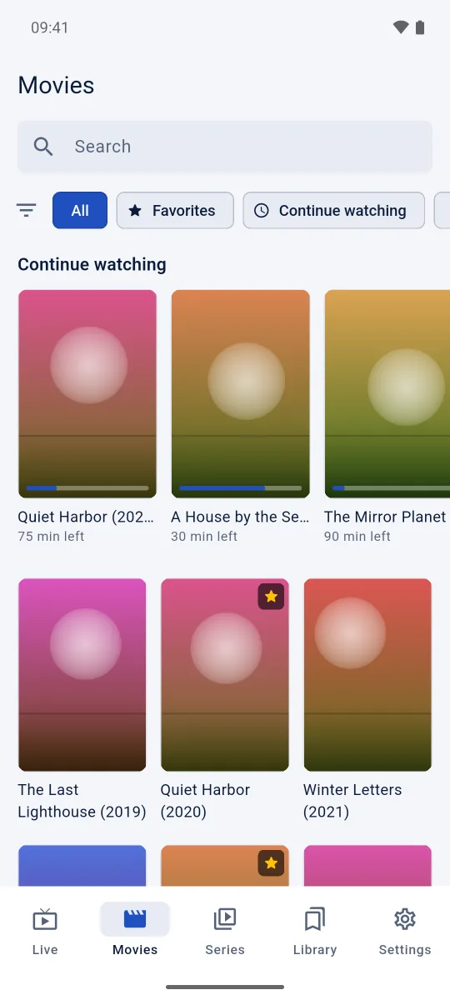
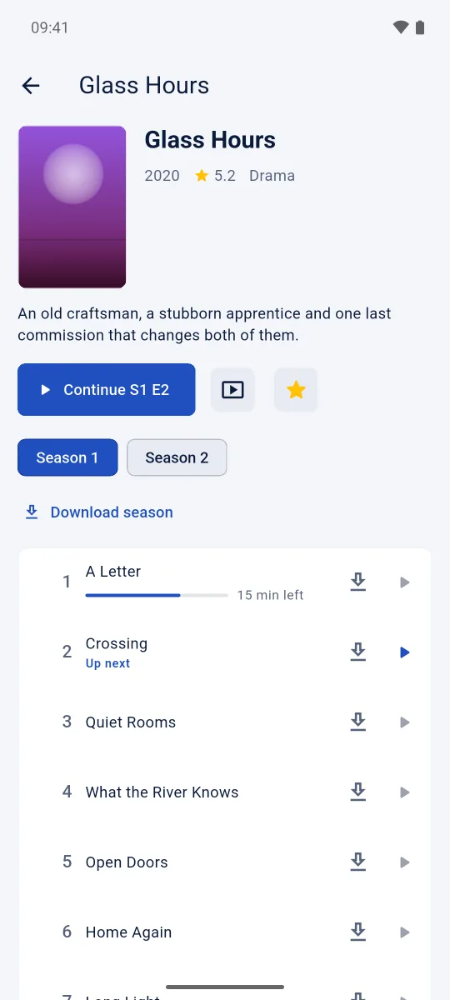

IPTV ב-Android,בכיס.
נגן מגע עם מחוות, קול שממשיך כשהמסך כבוי, תמונה בתוך תמונה והורדות לצפייה בלי רשת. קובץ APK אחד, חינמי, בלי חשבון.


התקנה
Android 8 ומעלה.
- מורידים את הקובץ בטלפון ופותחים אותו.
- Android שואל אם לאשר התקנה מהדפדפן או מאפליקציית הקבצים: מאשרים. אם Play Protect מזהיר על אפליקציה מחוץ ל-Play Store, בוחרים "התקן בכל זאת".
- מוסיפים מקור. באנר מודיע כשיוצאת גרסה חדשה: לוחצים "עדכן עכשיו" והאפליקציה מורידה ומתקינה אותה (Android מבקש אישור), והנתונים נשארים.
עוד לא ב-Play Store, ולכן ההתקנה היא מקובץ ישיר. הוא חתום במפתח של הפרויקט עצמו.
מה מקבלים
נגן שנבנה לאגודלים.
הקשה כפולה לדילוג, החלקה לווליום ולבהירות, לחיצה ארוכה ל-2x. כתוביות, רצועות שמע וטיימר שינה במרחק נגיעה.
ממשיך לנגן.
הקול ממשיך כשהמסך כבוי, עם פקדים בהתראה, ותמונה בתוך תמונה שומרת על התמונה בזמן שמשתמשים באפליקציות אחרות.
סדרות, עונה אחרי עונה.
המשך צפייה בפרק ובדקה הנכונים, דילוג על הפתיח והכתוביות, והורדת פרקים למועד מאוחר יותר.

שאלות
למה זה לא ב-Play Store?
בינתיים מתקינים מקובץ ישיר, חתום במפתח של הפרויקט. Android מבקש לאשר את ההתקנה פעם אחת.
איזה קובץ צריך?
הקובץ arm64-v8a מתאים לכמעט כל טלפון וטאבלט מ-2017 ואילך. בעמוד ההורדות יש את השאר.
איך מתעדכנים?
באנר מודיע כשיוצאת גרסה חדשה. לוחצים "עדכן עכשיו": האפליקציה מורידה ומתקינה אותה, והנתונים נשארים.